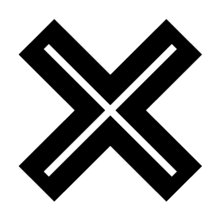
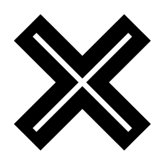

Jonathan LANDRY
Contact: mail.jonathanlandry@gmail.com
I am a student in Software Engineering at the University of Bordeaux and I wish to obtain an internship in an enterprise in France in the same field.
My interests besides Computer Science are fairly varied. I enjoy exploring new horizons and I find hapiness in small things or activities that are challenging and stimulating. Sport is essential to me, it is a way of becoming a better version of myself. I like running, cycling, fitness, football, basketball, and more. I have been playing chess since I was 6 years old. Science and new technologies in general form a great point of interest. I also like to learn languages (mostly English and Arabic) since it allows me to learn about people, cultures, history, etc.
I obtained my French General Baccalaureate diploma in 2021 with a major in Mathematics, Physics and Chemistry and an elective of advanced Mathematics ("Mathématiques Expertes").
I completed my Computer Science License at the University of Bordeaux in 2024. During those three years, I learnt general Computer Science knowledge and tools to later prepare a Master's. I had the chance to undertake an internship at LaBRI at the end of my second year. Also, most of my professors were researchers so I gained a lot from this License.
I am currently in my last year of Master's with a Software Engineering major, at the University of Bordeaux. I wish to acquire as much knowledge and experience as possible so as to be ready to work in the real world, to shape it.


 
